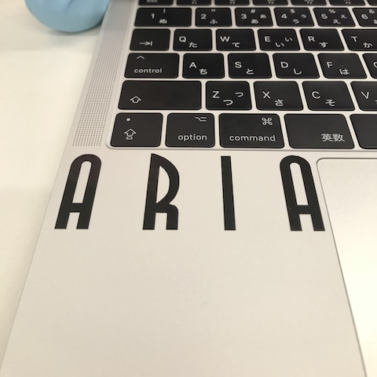

Illustrator
6/14(thu)3,4講時
1日目の授業はIllustratorを使って次の授業以降に使うデータの作成をした。
Illustratorには少し触ったことがあったのでそこそこ良いデータが作成できた。

Laser cutter
6/15(fri)1-4講時
2日目の授業は加工工程実践（デジタルファブリケーション）を使わせてもらえた。
自分はLaser cutterを使わせてもらった。
Laser cutterとはレーザー発信を活用した、カット加工・彫刻加工が可能な機械のことで今回はこのLaser cutterを使ってクリップを作るというのが目的
自分は２回の挑戦でクリップを作ることに成功した。
１回目
サイズ調整のミス、カットしなくていいところを間違ってカットしてしまった。
この２点が失敗した理由だ。
２回目
ミスしていたところの修正をしてもう一度挑戦。
サイズ感もカットする場所も問題なし綺麗にクリップが出来上がった。
担当以外の機材はカッティングプロッターを使用した
カッティングプロッターとは
デジカルサーボ駆動方式を採用して高性能な作業ができるカッタープロッター。マーキングフィルム、紙、ロール紙、印刷物に合わせてのカットのほか、ペンプロッターとしても活用できる。
カッティングプロッターのレクチャー動画
事前にIllustratorで作っておいたデータを使いシール作成を行った。
専用のパソコンにデータを入れて編集する。
白石先生にきちんとレクチャーしてもらったので手間取ることはなかった。
カッティングプロッターを起動し各種設定をする（針、用紙）
ここでpcがフリーズするというアクシデントがありここは白石先生に手伝ってもらった。

完成したシールをpcに貼ってみた。
本当は違う色がよかったがMacには黒色があっていたと貼ってから思った。